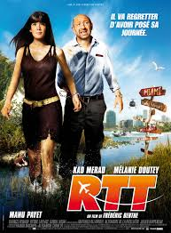
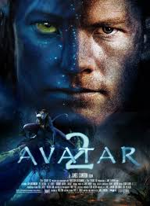
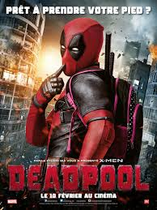

Corporate Youtuber ZTP - Ze 12th Player and EDHEC Business School
|  |
RTTArthur vit des jours tranquilles entre Florence, sa compagne depuis cinq ans, et son magasin de sport spécialisé. Tout va parfaitement bien jusqu'au jour où Florence lui annonce sans préavis qu'elle le quitte pour un autre homme, qu'elle va même se marier, qu'elle part vivre désormais à l'étranger. |
|  |
AVATAR 2Ceux-ci, dirigés par Jake Sully, Norman et Tsu'tey, nouveau chef des Omaticayas, vont alors entrer en guerre contre les humains. ... Avec l'aide d'Eywa, ils transfèrent définitivement l'esprit de Jake dans le corps de son Avatar. Il devient un Na'vi comme les autres. |
|  |
DEADPOOLDeadpool, est l'anti-héros le plus atypique de l'univers Marvel. A l'origine, il s'appelle Wade Wilson : un ancien militaire des Forces Spéciales devenu mercenaire. |
wagon product